5.1 Đặt lề trang in
Lề là khoảng trống giữa nội dung và cạnh của trang giấy in. Đôi khi, cần phải điều chỉnh lề để dữ liệu hiển thị dễ đọc hơn.
- Chuyển văn bản sang trạng thái in ấn. Chọn File -> Print
- Trong trình đơn thả xuống, chọn Settings -> chọn Page Margins -> Chọn kiểu lề phù hợp, hoặc tự thiết lập kích thước lề nhờ tính năng Custom Margins
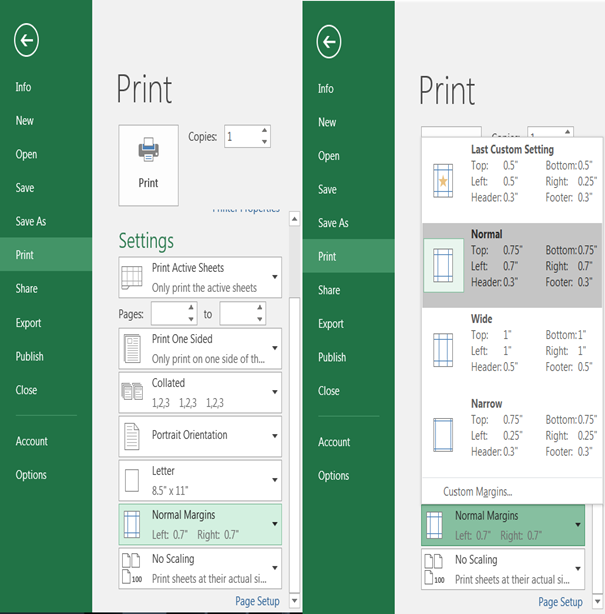
Hình 6.14. Cách đặt lề trang in trong Excel
5.2 Tạo tiêu đề đầu trang và cuối trang
Để định dạng Header&Footer cho trang in, ta thực hiện như sau:
- Chọn Ribbon File -> Print -> chọn Page Setup, xuất hiện hộp thoại Page Setup
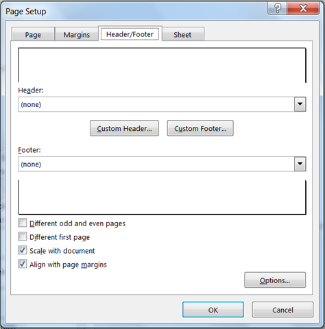
Hình 6.15. Hộp thoại Page Setup
- Chọn tab Header/Footer -> Nhập nội dung cần hiển thị tương ứng vào mục Header và Footer -> Ấn OK
5.3 Lặp lại tiêu đề bảng tính khi sang trái
Để tiêu đề của bảng tính cơ sở dữ liệu được lặp lại ở tất cả trang tin (trong trường hơp dữ liệu bảng tính quá dài hơn một trang in). Để thuận tiện cho người đọc theo dõi nội dung in ấn, Excel cung cấp tính năng lặp lại tiêu đề bảng tính.
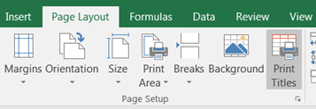
- Chọn Page Layout -> chọn Print Titles, xuất hiện hộp thoại.
- Chọn hàng hoặc cột lặp lại trên mỗi trang, nhấp vào nút Collapse Dialog à Hộp thoại Page Setup sẽ bị thu gọn lại, con trỏ sẽ trở thành mũi tên lựa chọn nhỏ (mũi tên màu đen) -> Chọn hàng hoặc cột cần lặp lại bằng cách bôi đen vùng dữ liệu cần lặp hoặc nhập địa chỉ vùng dữ liệu cần lặp lại vào hộp địa chỉ.
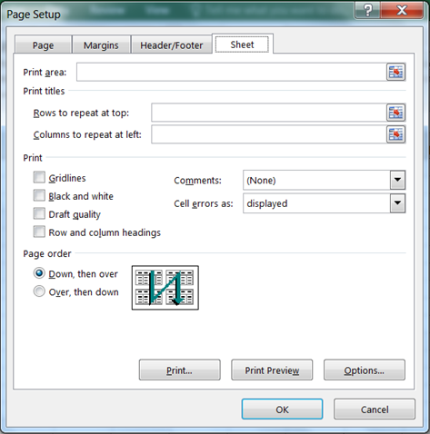
Hình 6.16. Hộp thoại Page Setup/Sheet
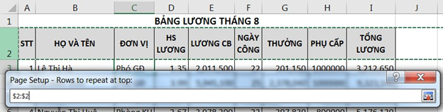
Hình 6.17. Chọn hàng cần lặp dữ liệu
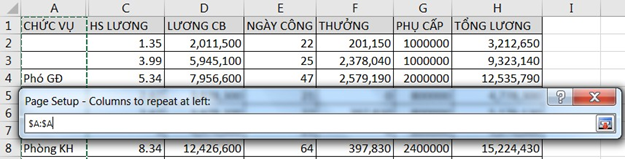
Hình 6.18. Chọn cột cần lặp dữ liệu
5.4 Thực hiện in ấn
5.4.1 Lưu trữ bảng tính
Lưu trữ với định dạng excel
Sử dụng tổ hợp phím Ctrl+S hoặc vào File -> Save/ Save As (Lưu với tên file khác), xuất hiện màn hình lưu trữ -> Chọn vị trí lưu.
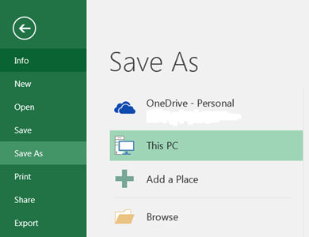
Hình 6.19. Màn hình lưu trữ dữ liệu
- OneDrive: Lưu trữ bảng tính qua dịch vụ điện toán đám mây
- Computer: Lưu trữ bảng tính trong máy tính
- Add a Place: Chọn một dịch vụ lưu trữ dữ liệu khác Màn hình xuất hiện tiếp theo sau
khi chọn nơi lưu trữ
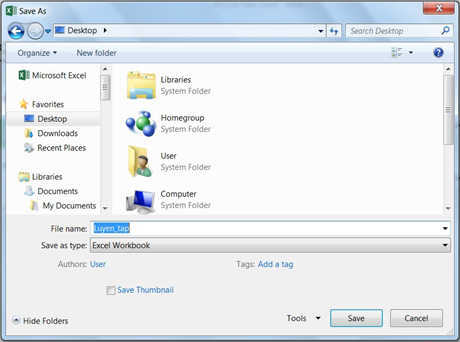
Hình 2.20. Chọn vị trí lưu trữ dữ liệu
Lưu trữ với định dạng tùy ý
Các dạng có thể lưu trữ:
• .xlsm: định dạng excel có chứa macro
• .xls: định dạng excel 97-2000
• .mhtm, .mhtml: định dạng web.
• .xltx: định dạng template dùng cho việc tạo bảng định dạng mẫu
• .txt, .csv: định dạng text
• .pdf: định dạng pdf
• .xps: định dạng XPS
Khi lưu workbook với một trong các định dạng này ta có thể lựa chọn các tùy chọn nội dung muốn thêm vào trong workbook trong mục Options.
Lưu workbook trên Onedrive
Để sử dụng OneDrive, người dùng phải có hoặc đăng ký (mới) một tài khoản miễn phí của Microsoft tại https://onedrive.live.com.
Thực hiện lưu trữ trên OneDrive
- Đăng nhập vào tài khoản Microsoft trong cửa số Microsoft Excel. Chú ý vào góc phía trên bên phải cửa sổ Excel, nhấp chuột vào Sign in
- Nhập tài khoản Microsoft (email) và mật khẩu để đăng nhập. Khi đăng nhập thành công, tên tài khoản sẽ xuất hiện ở góc trên bên phải màn hình.
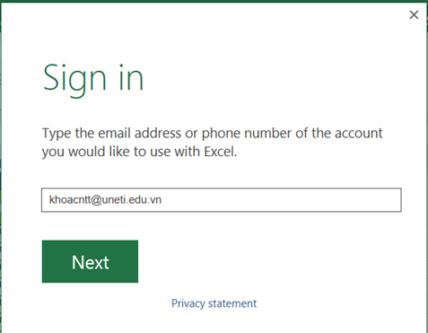
- Chọn tập tin cần lưu trữ -> vào File -> Chọn Save/ Save as -> Chọn OneDrive.
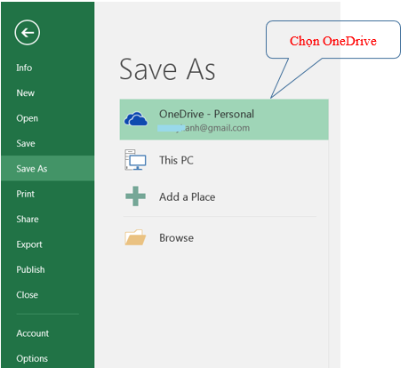
Hình 6.21. Màn hình lưu workbook trên OneDrive
- Chọn vị trí upload trên OneDrive -> Chọn Save để upload tập tin lên OneDrive.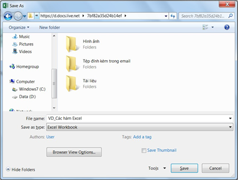
Sau khi lưu trữ, file dữ liệu có thể được truy cập và chỉnh sửa ở bất kỳ đâu bằng cách đăng nhập tài khoản Microsoft qua địa chỉ https://onedrive.live.com.
5.4.2 In ấn* Chọn một hoặc nhiều bảng tính (sheet) muốn in. Muốn chọn nhiều bảng tính, nhấp chọn sheet đầu tiên, giữ phím Ctrl + chọn các sheet còn lại.
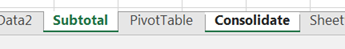
* Chọn File -> Print, mở ra cửa số In ấn
* Chọn Print Active Sheets (Các trang tính hiện hành) -> Chọn vùng in (Print Range)
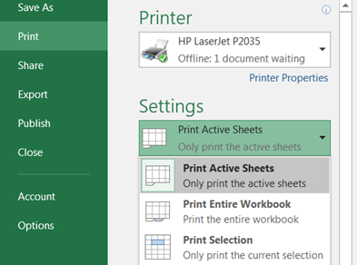
* Xem trước nội dung in trong cửa số Preview
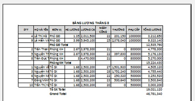
* Ấn Print
5.4.3 Tùy chỉnh nội dung trước khi in ấn
Đôi khi, phải thực hiện những điều chỉnh nhỏ khi in ấn để nội dung nằm gọn trong một trang in.
* Hiển thị trang in trong cửa số Preview. File -> Print. Nếu nội dung bảng tính bị cắt thành nhiều trang, người dùng muốn nội dung nằm gọn trong một trang in, chuyển Bước 2.
* Trong mục Settings -> chọn trình đơn thả xuống Scaling -> chọn Fit All Columns on One Page. -> Bảng tính sẽ được thu gọn vừa đủ trong một trang in.
Lưu ý: Nội dung bảng tính sẽ trở nên khó đọc hơn vì chúng được thu nhỏ lại. Vì vậy, có thể chúng ta sẽ không muốn sử dụng tùy chọn này khi in một bảng tính nhiều thông tin. Chế độ mặc định để in ấn với kích thước thực là No Scaling.